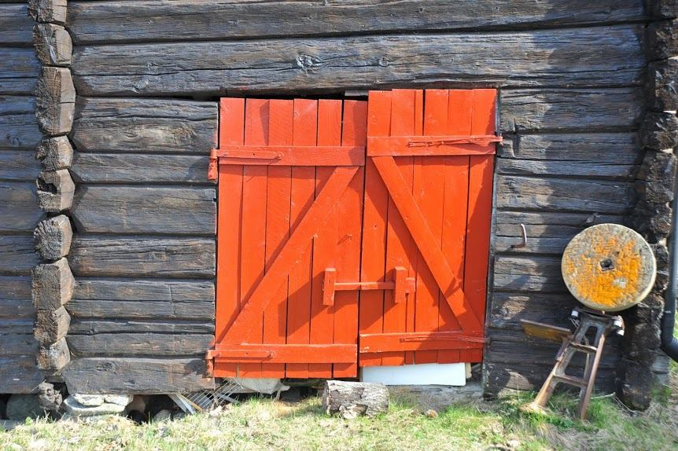

Portfolio
Organic Farmhouse Ales:
Saison
WIT
Blonde
Gris
Pissihose
Sigar
Double Saison
Imperial India Pale Ale
Farm to Farm:
Farm to Farm Saison
Farmhouse Pale Ale
Oak Aged Ales:
Farmhouse Fusion
Saison
IPA
